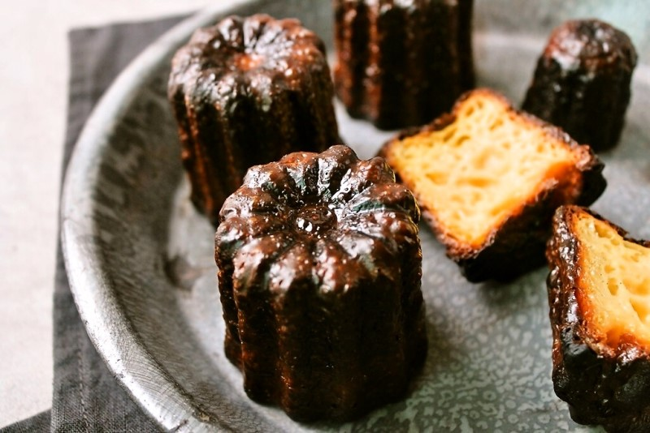

크림 브륄레는 '불에 그을린 크림'이라는 뜻으로, 커스타드 크림을 그릇에 담은 뒤 크림 위에 설탕을 뿌리고 불에 그을려서 캐러말화 시킨 디저트.
1533년 마카롱은 좋아하던 이탈리아 메디치가의 카트린느가 프랑스 왕 앙리 2세와 결혼하면서
프랑스로 전해졌다고 한다.
계란 흰자와 설탕을 사용한 머랭으로 동그란 꼬끄를 만든 후 그 사이에 가나슈, 잼 등 다양한 필링을 넣어서 먹는 과자.
'천 곂의 잎사귀'라는 뜻을 가지고 있는 달콤하고 바삭바삭한 디저트. 얇은 패스트리를 겹겹히 올려서 만든다.
휘핑크림을 얹은 밤크림, 밤 페이스트의 진한 맛과 스위스 머랭의 바삭함이 잘 어울리는 디저트.
'프랑스 요리의 아버지'로 불리는 앙토냉 카렘(Careme, 1784∼1833)이 1800년대 초 개발한 디저트다.
달걀, 버터, 밀가루 등을 반죽해서 슈(Choux)를 만들고 그 안에 커스터드나 휘핑크림을 넣고 구운 뒤 겉에 초콜렛이나 바닐라, 버터 등을 입힌 것이다.
여기에 과일이나 꽃잎 등으로 장식하기도 한다.
프랑스 보르도 지방의 유명 디저트.
보르도의 안농시아드 수도원이라는 곳에서 15~18세기 즈음에 처음 제작한 것으로 알려졌다고 한다.
진한 갈색 빛에 겉은 바삭하고 속은 촌촌한 푸딩같은 식감의 디저트.

-재료-